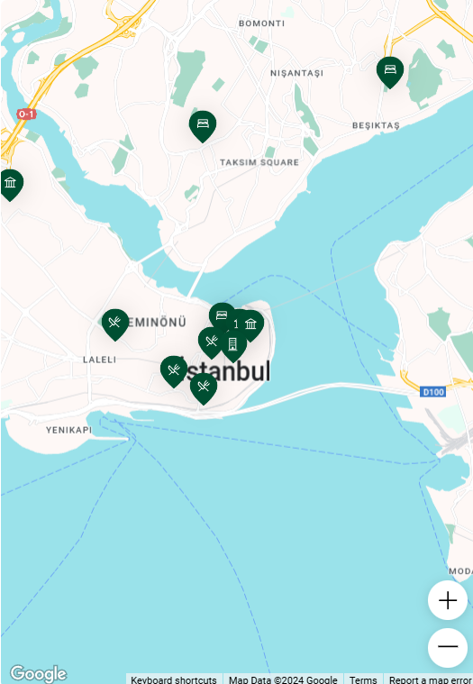

<!-- <gmpx-api-loader
  [key]="api_key"
  solution-channel="GMP_GCC_placeoverview_v1_xl"
/> -->

@if (itinerary$ | async; as itinerary) {
<mat-card class="header-card">
  <mat-card-header>
    <mat-card-title class="itinerary-title open-sans-400">
      {{ itinerary.cityName }} itinerary
    </mat-card-title>
  </mat-card-header>
</mat-card>

<div class="itinerary-container open-sans-400">
  <div class="left-container">
    <app-summary
      [destination]="itinerary.cityName"
      [tripLength]="itinerary.tripLength"
      [text]="itinerary.summary"
    ></app-summary>
    @for (dailyPlan of itinerary.schedule; track dailyPlan.day; let i = $index)
    {
    <app-daily
      [color]="getColor(i)"
      [dayPlan]="dailyPlan"
      (recommendationClicked)="focusOnMarker($event)"
    ></app-daily>
    }
  </div>

  <div class="right-container">
    <!--  -->

    <div class="gmap-container">
      <google-map
        class="gmap"
        [width]="width"
        [height]="height"
        [options]="options"
        [center]="center"
        [zoom]="zoom"
      >
        @for (dailyPlan of itinerary.schedule; track dailyPlan.day) { @for
        (recommendation of dailyPlan.recommendations; track recommendation.id) {
        <map-advanced-marker
          [content]="recommendation.content"
          [position]="_convertToLatLngLiteral(recommendation.location)"
          #markerElem="mapAdvancedMarker"
          (mapClick)="openInfoWindow(markerElem, recommendation)"
        ></map-advanced-marker>
        } }

        <map-info-window #infoWindow></map-info-window>
      </google-map>
    </div>
  </div>
</div>

<div class="save-container">
  <button class="save-btn" mat-raised-button color="primary" [disabled]="false" (click)="saveItinerary()">
    Save itinerary
  </button>
</div>
}
